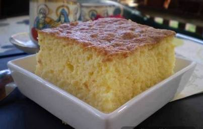

Koh
Vreme pripreme:45 minuta

Sastojci:
6 jaja
12 kašika sećera
2 vanilin sećera
12 kašika griza
1.5l mleka
Postupak spremanja: Umutiti penasto 6 belanca, dodati 6 kašika šećera, pa 6 žumanaca i 12 kašika griza. Staviti u rernu da se peče a za to vreme skuvati 1.5l mleka sa 6 kašika šećera i 2 vanilin šećera.
Vaš komentar:
Ovo je mesto za Vaš komentar...